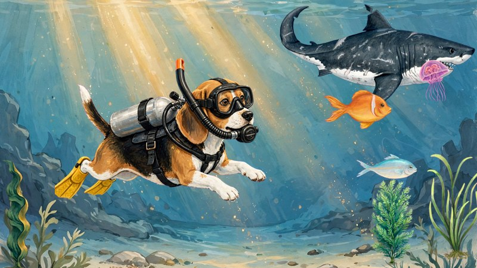
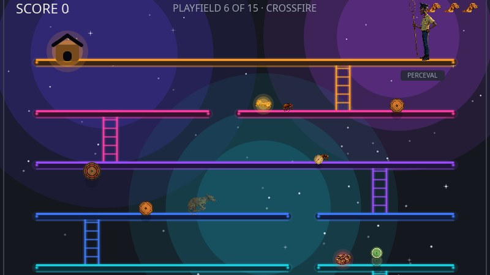
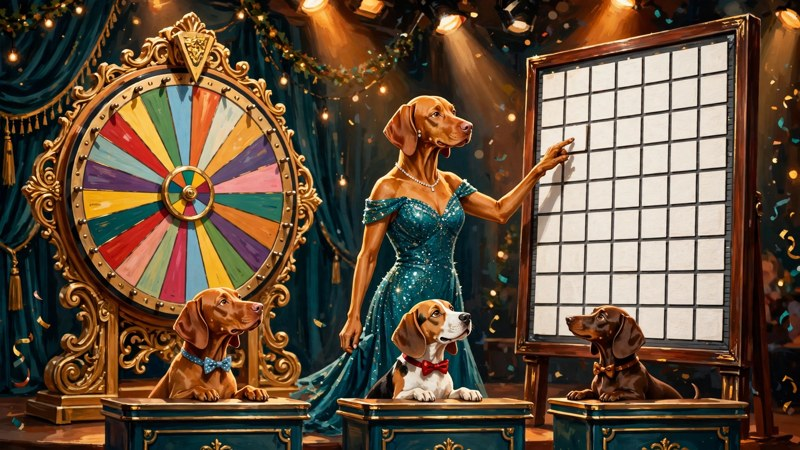
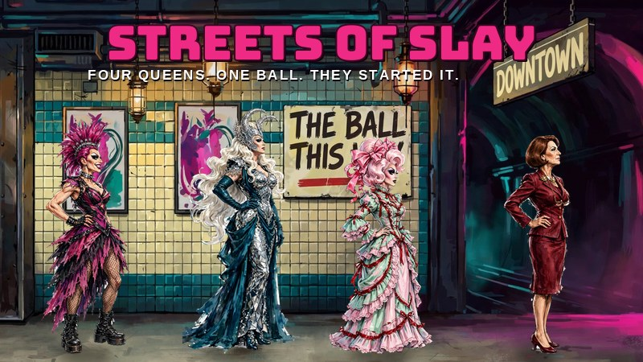
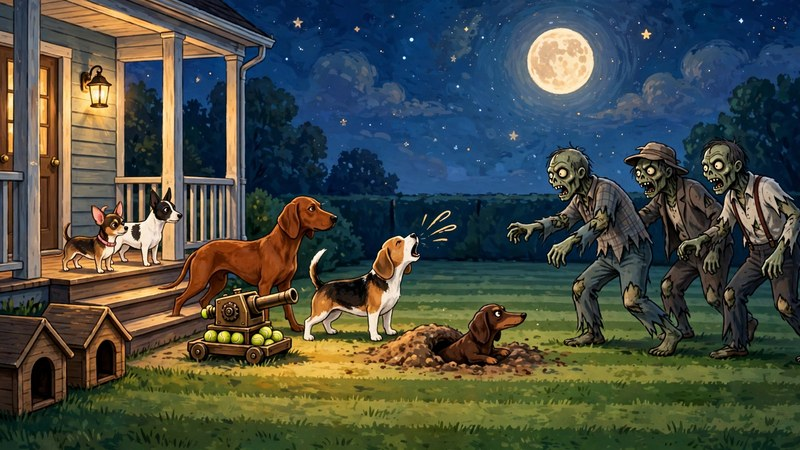
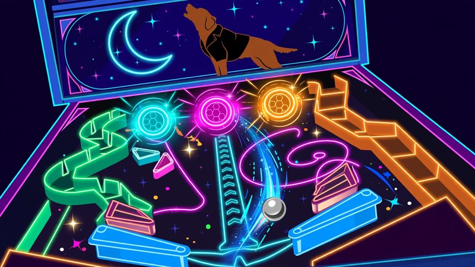

Vizsla Arcade · shipped
One cabinet, thirty-six games
Vizsla Arcade is the game cabinet built into Vizsla OS — version 0.11.27, shipped and seated on the machines that run Vizsla today, from the same Family Catalog the fleet installs from (generation 703, read 13 November 2026). Thirty-six games of the family’s own, played by a painted cast of dogs — and, like everything else here, no store, no account, and no network. The games are in the box, and they work offline.

The cabinet
One cabinet, three doors. The Arcade is an app in the drawer, it rides in the installer, and it sits on the login screen itself — a guest can play a game without logging in, and nothing is kept and nothing is tracked when they do. Inside, the shelf is split in two: Play, the thirty-four games for keyboard, mouse, and controller, and Touch, the finger shelf, where two games of its own live alongside the ones built for a tap. The touch-first games travel, too — they are the same games the phone’s Games folder shows.
Every game is an original — the mechanics are the classics, remembered fondly, and the code, the art, the words, and the music are the family’s own. Each game carries its own composed soundtrack, written as MIDI and playable outside the cabinet in Songdog and Audio Waves, like any record in the house. Scores live on your machine, per game, and a card says plainly whether a game has been played yet or not.
The games, up close
Eight more of them, pictured the way the cabinet pictures them — every image below is the game’s own art, the painting or card its shelf wears. No mockups, and nothing borrowed from another game.





The whole shelf
All thirty-six, in the order the cabinet keeps them. The eight pictured above are on this list too — the rest get their names and their one line each, which is what their cards say in the cabinet.
Play — thirty-four games
- Brick BreakerBounce the ball, break every brick.
- BlockfallStack the falling blocks, clear the lines.
- Word WheelThree players, one wheel — spin, buy a vowel, solve the phrase.
- Barrel ClimbDodge Perceval’s barrels, mind the fleas, and climb to the doghouse.
- Vizsla HuntBirds up! Three shots a flight — the vizsla fetches.
- Bone YardSniff out every buried bone — dig everywhere else.
- Kibble CureRusty throws the pairs in; line up the colors, clear the fleas.
- 2048Slide the tiles, merge the pairs, chase 2048.
- Memory MatchFlip the cards, find all eight pairs.
- The CrossingHop the street, ride the creek, get the pup home.
- Bagel’s BouldersBagel breaks the boulder field, one rock at a time.
- Flea InvadersThe fleas march in formation. Spray them down.
- Picture CrossThe numbers hide a picture. Paint it in.
- KlondikeThe classic patience — winnable deals, a daily challenge, hints, undo.
- Word SearchWords hide in the letter grid. Drag across them.
- Dice SheetFive dice, three rolls, thirteen boxes to fill.
- CrosswordThree small crosswords, made for this shelf.
- Tile WordsBuild words on the board. Outscore the Vizsla AI.
- Long DogFrank eats sausage links and grows longer. Mind the tail — it’s also Frank.
- Rusty GlidesOne tap, one flap — thread Rusty and his propeller cap through the orchard gates.
- Bagel SliceBagel raided the pantry. Slice the flying fruit — never the flea bombs.
- Scent RunBagel has the scent and the trail won’t wait — lanes, leaps, and ducks at a full run.
- Marble MayhemKibble-balls spiral toward the bowl — match three, pop the chain.
- Pocket PoolBagel racks. Drag back, release, sink ’em — practice, or 8-ball against a gentle beagle.
- Pinball: HOWLTwo tables: Midnight Motorcycle and the Soul Train Yard.
- Kart YardBackyard Grand Prix with the whole cast — tennis-ball boosts, hose puddles, and Frank’s mighty draft.
- Endless HopperFrank crosses an endless world of traffic and rivers. The camera is coming. It never blinks.
- Shark SupperBagel in full scuba gear works the lagoon — smaller fish only.
- Dogs Vs. ZombiesThe pack holds the yard till dawn.
- Rope & KibbleA kibble pellet, some ropes, and Rusty’s bowl — cut, ride the bubbles, mind the arc. Twenty-four levels.
- Jetpack FrankFrank found a leaf-blower. Hold to rise, release to fall — mind the gnomes.
- Swat TeamGnats have taken Rusty’s porch. One swatter, three glasses of lemonade — defend the nap.
- Streets of SlayFour queens crossing the city to The Ball.
- Astro BarkThe sky is falling and Bagel holds the ground line — split the big meteors, chase the peak.
Touch — the finger shelf
- Tri TowersThree towers of cards — play one up or one down, clear them all.
- Photo HuntTwo pictures, five differences apiece — tap what doesn’t belong before the clock runs out.
- Word WheelThe same game as on the Play shelf — it is a finger game as much as a desk game, so it keeps a door on both.
- PuzzlrThe family jigsaw keeps its card here, and on Play too — the card opens the app itself: pictures cut into pieces, put back together, and video puzzles that play inside their pieces.
More games for the Touch shelf are in development now — built one at a time, the way the rest of the cabinet was. They are not listed above, because things still being built are not listed as done. When one ships, it joins the shelf and this page.
The cast
The same five dogs star across the cabinet, and the rule is one dog, one look, every game — each of them is painted from a single master portrait, and the master is what every new pose answers to. Rusty, the russet vizsla, leads: he climbs the scaffold, minds the kibble, and naps on the porch the gnats keep invading. Bagel, the tricolor beagle, works nose-first — he dives the lagoon, breaks the boulders, and slices what the pantry throws. Frank, the chocolate dachshund, is the long one: he flies the leaf-blower, stretches through Long Dog, and digs in when the zombies come. Lola, small, enormous-eared, and never without her pink collar, and Mandy, the rat terrier who supervises, hold the porch in Dogs Vs. Zombies — and in Klondike’s All Mascots deck, Mandy sits on all four kings. Two more faces belong to the cabinet alone: Velvet, who turns the letters on Word Wheel, and Perceval the dog catcher, the one villain — it is his barrels Rusty is climbing past.
Barrel Climb also stands on its own, outside the cabinet, as its own app — the same game through its own door, listed on What’s inside.
Steam & Proton, already in the box
The cabinet above is the family’s own games. For the rest of a library, Steam comes preinstalled — the client is seated with the system itself, and GE-Proton 11-12, the community Proton build, is already waiting in its compatibility-tools folder. Steam Play is switched on for every title from the start: the setting Steam calls “Enable Steam Play for all other titles” is set before the client is ever opened — and it stays set.
What that buys: the Windows games already in your Steam library ride along through Proton — no second copy to buy, no other computer to keep. The honest boundary, said out loud: no account has been signed in and no game has been launched on these machines yet. The first sign-in is yours, and each game still answers for itself the first time it runs. The stack is installed, seeded, and checked — the playing is up to the game.